Anzon Wong
Architect in the United Kingdom, from Hong Kong. I design buildings, make small tools and AI agents for architects, and teach people to build agents of their own.
來自香港、現居英國的建築師。我設計建築，為建築師製作小工具及 AI 代理人，亦教人建立屬於自己的代理人。
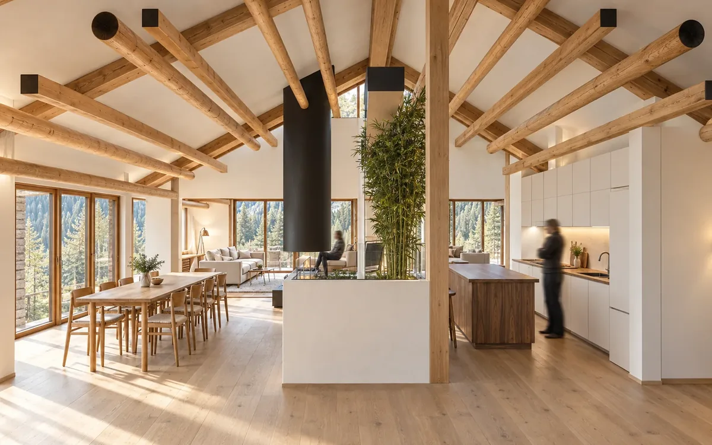
The Upside-Down Chalet倒置木屋P01 · 2017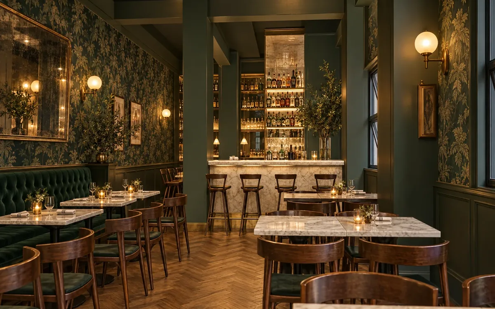
CocotteCocotte 法式小館P02 · 2013| P01 | The Upside-Down Chalet倒置木屋倒置木屋The Upside-Down ChaletResidential · interior住宅 · 室內 A chalet conversion with the bedrooms below and the living space under the roof. Walk through it in 3D and compare the original drawings with AI renders. 木屋改建項目：睡房在下，起居空間在屋頂之下。可於立體模型中漫遊，並以原有圖則對照 AI 效果圖。 Open開啟 → |
Residential · interior住宅 · 室內 | 2017 | |
| P02 | CocotteCocotte 法式小館Cocotte 法式小館CocotteHospitality · interior · own design餐飲 · 室內 · 個人設計 A small French bistro in Hong Kong, my own interior design from 2013, revisited as a working 3D model with the options, materials and drawings behind it. 2013 年由本人設計的香港法式小館。以可操作的立體模型重溫方案，並展示設計選項、物料及背後的圖則。 Open開啟 → |
Hospitality · interior · own design餐飲 · 室內 · 個人設計 | Hong Kong香港 | 2013 |
| P03 | Family flat, Hong Kong香港家庭住宅香港家庭住宅Family flat, Hong KongResidential · interior · own design住宅 · 室內 · 個人設計 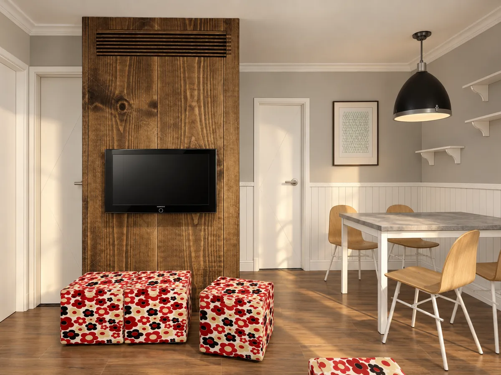 A family flat refitted in 2015 to my own design. Explore the SketchUp model in 3D, the renders made from it and the construction drawings. 2015 年按本人設計翻新的家庭單位。可於立體模型中瀏覽，並查看由此導出的效果圖及施工圖則。 Card image: AI render based on the original model, 2026. 卡片圖片：根據原有模型生成的 AI 效果圖（2026）。 Open開啟 → |
Residential · interior · own design住宅 · 室內 · 個人設計 | Hong Kong香港 | 2015 |
| P04 | Design illustrations for the South China Morning Post南華早報設計插圖南華早報設計插圖Design illustrations for the South China Morning PostDesign illustration · series設計插圖 · 系列 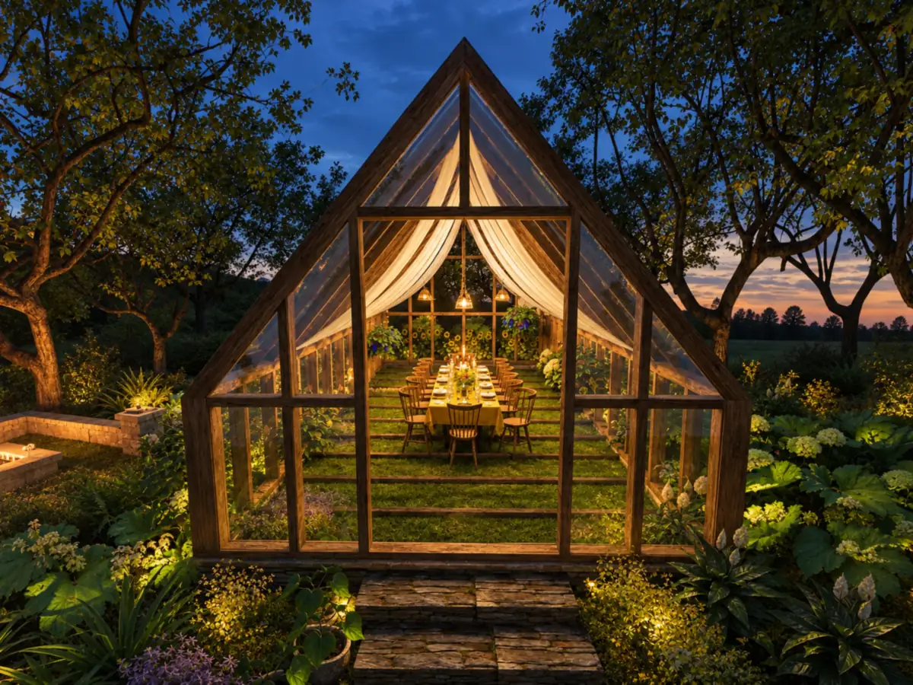 Thirteen rooms for the newspaper's style pages, 2013-2017. For each I read the interview, interpreted it as a room, then designed and rendered it. 2013 至 2017 年為報章生活版繪畫的十三個空間。每次先閱讀訪問，再自行理解，設計成空間並製作效果圖。 Card image: AI render based on the original model, 2026. 卡片圖片：根據原有模型生成的 AI 效果圖（2026）。 Open開啟 → |
Design illustration · series設計插圖 · 系列 | Hong Kong香港 | 2013-2017 |
| P05 | Island sewage treatment works, exterior and landscape離島污水處理廠外觀及園景離島污水處理廠外觀及園景Island sewage treatment works, exterior and landscapeInfrastructure · exterior and landscape基建 · 外觀及園景 Architectural massing, green roofs and renders for two sewage treatment works on Hong Kong's outlying islands, with the massing-to-render studies. 為香港兩座離島污水處理廠所作的建築體量、綠化屋頂及效果圖，並附由體量到渲染的研究。 Card image: AI render based on the original model, 2026. 卡片圖片：根據原有模型生成的 AI 效果圖（2026）。 Open開啟 → |
Infrastructure · exterior and landscape基建 · 外觀及園景 | Hong Kong香港 | 2010 |
| P06 | Hillside apartment, Hong Kong香港山邊住宅單位香港山邊住宅單位Hillside apartment, Hong KongResidential · interior · collaboration住宅 · 室內 · 合作項目 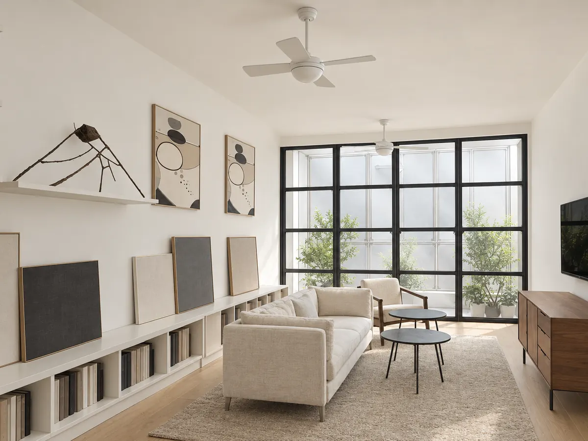 A family apartment, 2015: explore the SketchUp model in 3D, fly through its saved scenes and see three new AI renders. 2015 年的家庭住宅單位：於立體模型中瀏覽，飛越已存場景，並查看三張新 AI 效果圖。 Card image: AI render based on the original model, 2026. 卡片圖片：根據原有模型生成的 AI 效果圖（2026）。 Open開啟 → |
Residential · interior · collaboration住宅 · 室內 · 合作項目 | Hong Kong香港 | 2015 |
| P07 | Split-level house, Hong Kong香港錯層獨立屋香港錯層獨立屋Split-level house, Hong KongResidential · interior · collaboration住宅 · 室內 · 合作項目 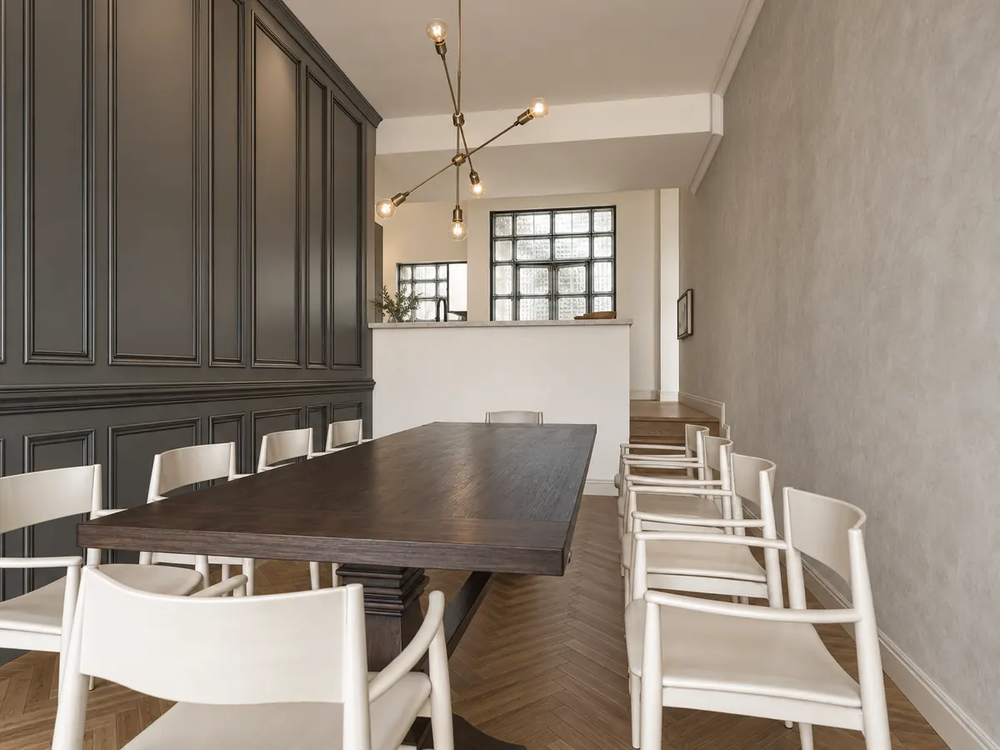 A family house on five split levels: cut through the SketchUp model level by level, fly through its scenes and see three new AI renders. 五個錯層的家庭住宅：於立體模型中逐層剖切，飛越已存場景，並查看三張新 AI 效果圖。 Card image: AI render based on the original model, 2026. 卡片圖片：根據原有模型生成的 AI 效果圖（2026）。 Open開啟 → |
Residential · interior · collaboration住宅 · 室內 · 合作項目 | Hong Kong香港 | 2014-2016 |
| P08 | Menswear stores and barbershops男裝店及理髮店男裝店及理髮店Menswear stores and barbershopsRetail · interior · collaboration零售 · 室內 · 合作項目 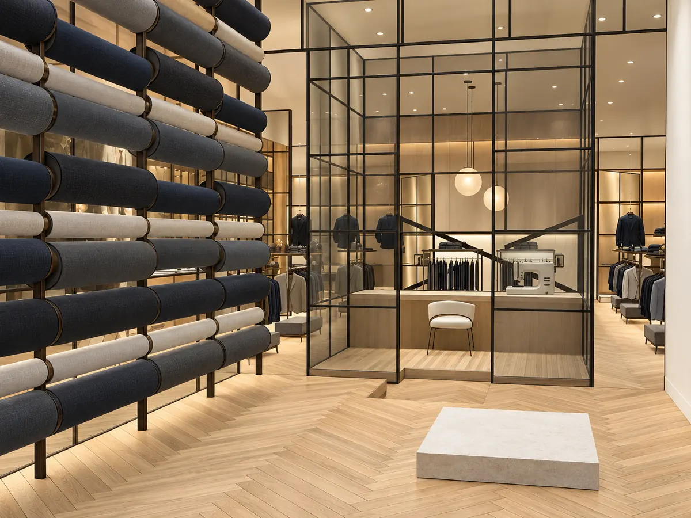 Five tailoring and menswear stores with barber areas, 2016: the models, view sets and fixture drawings, with three new AI renders. 2016 年五間設有理髮區的男裝及訂製西服店：模型、視圖及陳列裝置圖則，另附三張新 AI 效果圖。 Card image: AI render based on the original model, 2026. 卡片圖片：根據原有模型生成的 AI 效果圖（2026）。 Open開啟 → |
Retail · interior · collaboration零售 · 室內 · 合作項目 | 2016 | |
| P09 | Custom furniture pieces訂製家具系列訂製家具系列Custom furniture piecesFurniture · collaboration家具 · 合作項目 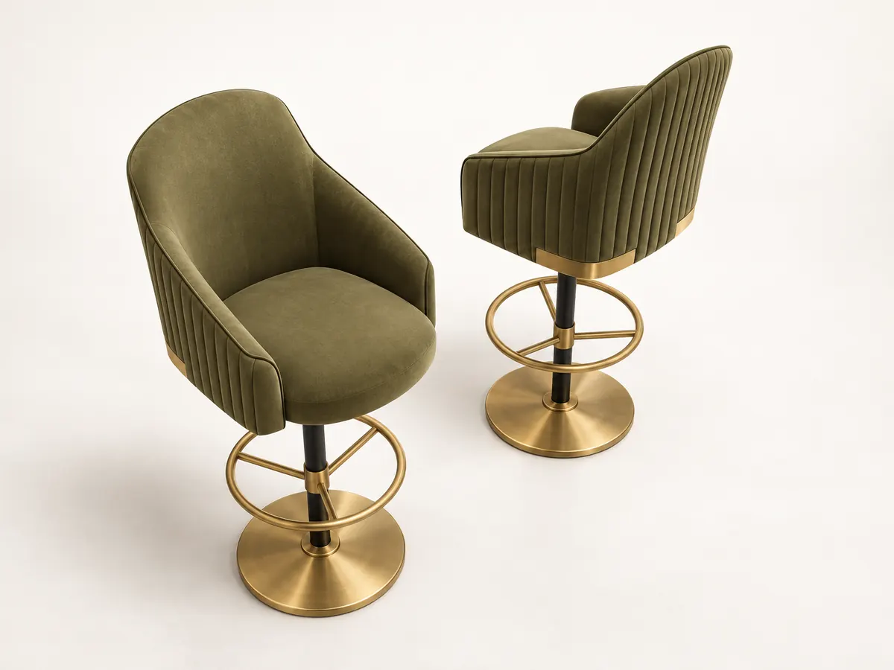 Banquettes, bar stools, chairs and a high table drawn for restaurant and bar interiors, 2013-2016, with three new AI renders. 2013 至 2016 年為餐廳及酒吧繪畫的卡座、吧椅、餐椅及高枱，另附三張新 AI 效果圖。 Card image: AI render based on the original model, 2026. 卡片圖片：根據原有模型生成的 AI 效果圖（2026）。 Open開啟 → |
Furniture · collaboration家具 · 合作項目 | 2013-2016 | |
| P10 | Restaurants and bars, Hong Kong香港餐廳及酒吧香港餐廳及酒吧Restaurants and bars, Hong KongHospitality · interior · collaboration餐飲 · 室內 · 合作項目 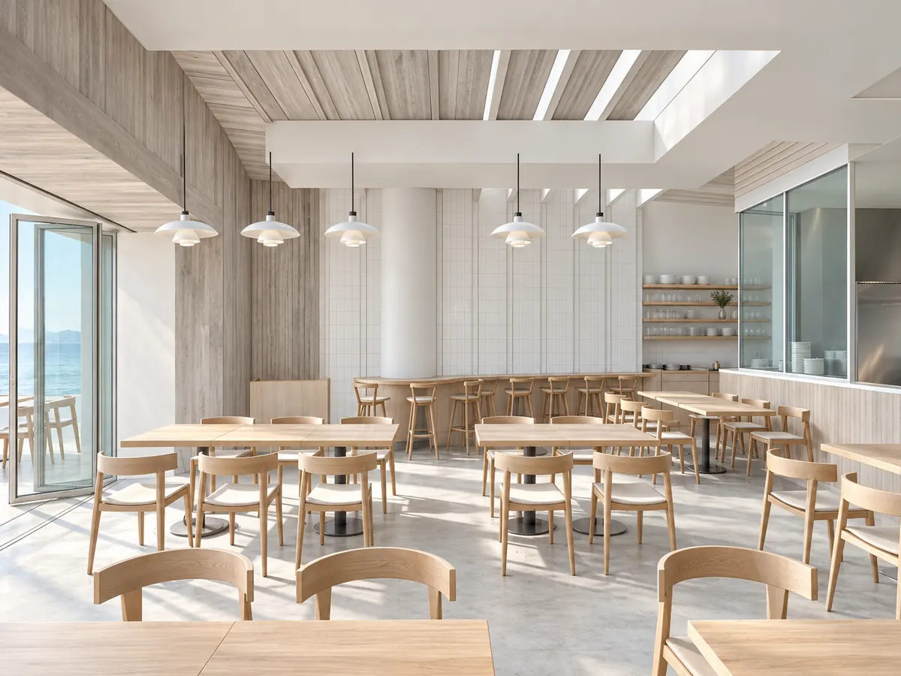 Eleven restaurants, bars and cafes, 2013-2016: SketchUp views, plans and option studies, with three new AI renders. 2013 至 2016 年十一間餐廳、酒吧及咖啡店：SketchUp 視圖、平面及方案研究，另附三張新 AI 效果圖。 Card image: AI render based on the original model, 2026. 卡片圖片：根據原有模型生成的 AI 效果圖（2026）。 Open開啟 → |
Hospitality · interior · collaboration餐飲 · 室內 · 合作項目 | Hong Kong香港 | 2013-2016 |
| P11 | Members' clubs and hotel dining會所及酒店餐飲空間會所及酒店餐飲空間Members' clubs and hotel diningHospitality · interior · collaboration會所及餐飲 · 室內 · 合作項目 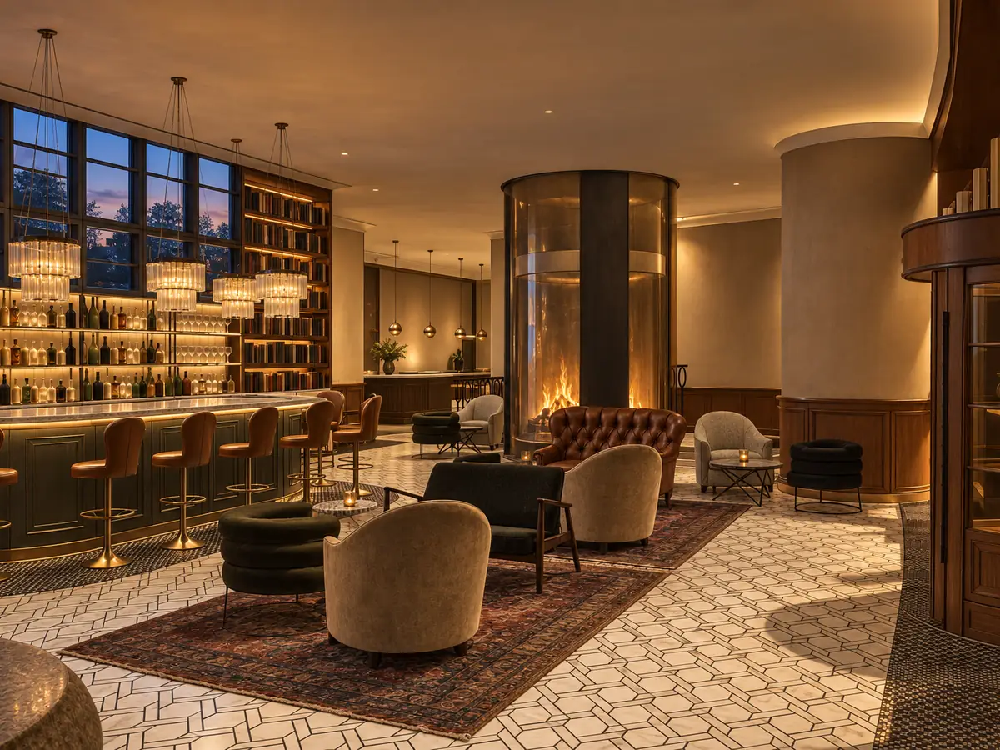 Four members' clubs and a hotel rooftop restaurant, 2016-2017: views, plans and layout options, with three new AI renders. 2016 至 2017 年四個會所及一間酒店天台餐廳：視圖、平面及佈局方案，另附三張新 AI 效果圖。 Card image: AI render based on the original model, 2026. 卡片圖片：根據原有模型生成的 AI 效果圖（2026）。 Open開啟 → |
Hospitality · interior · collaboration會所及餐飲 · 室內 · 合作項目 | 2016-2017 | |
| P12 | Apartment interiors住宅單位室內設計住宅單位室內設計Apartment interiorsResidential · interior · collaboration住宅 · 室內 · 合作項目 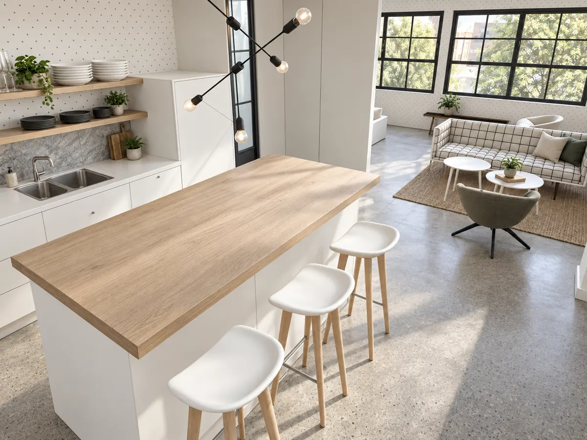 Three apartments, 2015-2017: SketchUp views, sections and plans, with three new AI renders. 2015 至 2017 年三個住宅單位：SketchUp 視圖、剖面及平面，另附三張新 AI 效果圖。 Card image: AI render based on the original model, 2026. 卡片圖片：根據原有模型生成的 AI 效果圖（2026）。 Open開啟 → |
Residential · interior · collaboration住宅 · 室內 · 合作項目 | 2015-2017 | |
| P13 | Wedding banquet setting, Hong Kong香港婚宴佈置香港婚宴佈置Wedding banquet setting, Hong KongEvent design · banquet setting活動設計 · 婚宴佈置 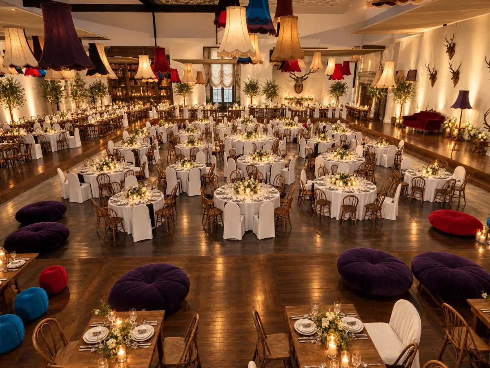 Seating layouts from March to June and two 3D schemes in July for a private wedding banquet in one large hall. 一個大型禮堂內的私人婚宴：3 月至 6 月的座位佈局，以及 7 月的兩個立體方案。 Card image: AI render based on the original model, 2026. 卡片圖片：根據原有模型生成的 AI 效果圖（2026）。 Open開啟 → |
Event design · banquet setting活動設計 · 婚宴佈置 | Hong Kong香港 | 2011 |
| P14 | Timber gridshell pavilion concept木網殼展亭概念設計木網殼展亭概念設計Timber gridshell pavilion conceptPavilion · concept展亭 · 概念設計 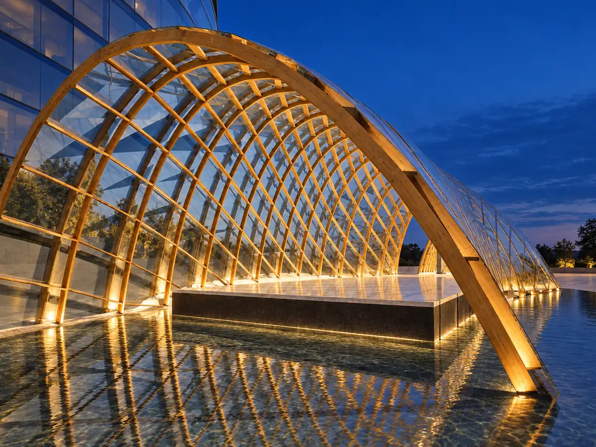 A four-day concept for a glazed timber gridshell vault rising out of a shallow pool, with a linked corridor study. 四日內完成的概念：由淺水池升起的玻璃木網殼拱頂，並附連接走廊研究。 Card image: AI render based on the original model, 2026. 卡片圖片：根據原有模型生成的 AI 效果圖（2026）。 Open開啟 → |
Pavilion · concept展亭 · 概念設計 | Hong Kong香港 | 2011 |
| P15 | Juice bar and cafe, Hong Kong香港果汁吧及餐廳香港果汁吧及餐廳Juice bar and cafe, Hong KongInterior · food and beverage室內設計 · 餐飲 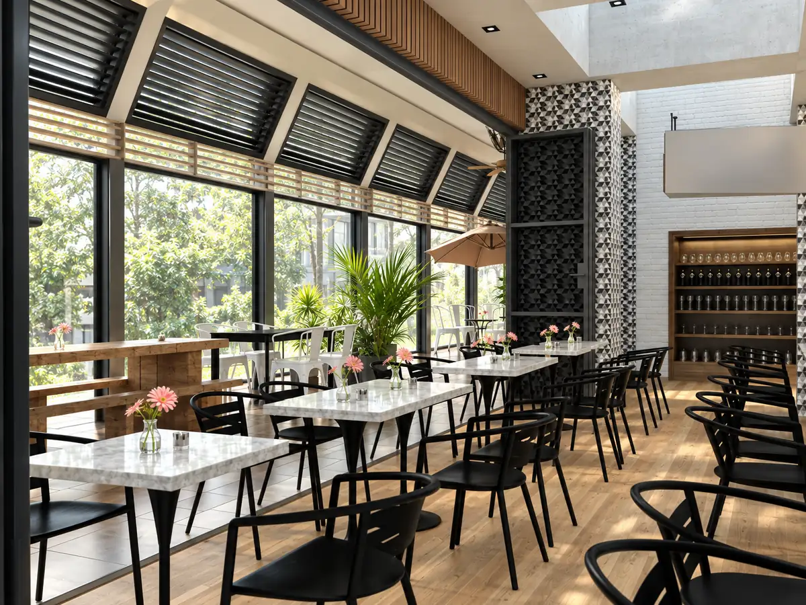 Three material options inside and out, then lighting and final renders over three weeks for a narrow glazed cafe and juice bar. 一間狹長玻璃餐廳及果汁吧：室內外各三個物料方案，再到燈光及最終效果圖，歷時三星期。 Card image: AI render based on the original model, 2026. 卡片圖片：根據原有模型生成的 AI 效果圖（2026）。 Open開啟 → |
Interior · food and beverage室內設計 · 餐飲 | Hong Kong香港 | 2013 |
| P16 | Mall green walls, Hong Kong香港商場綠化牆香港商場綠化牆Mall green walls, Hong KongLandscape · photomontage園景 · 合成效果圖 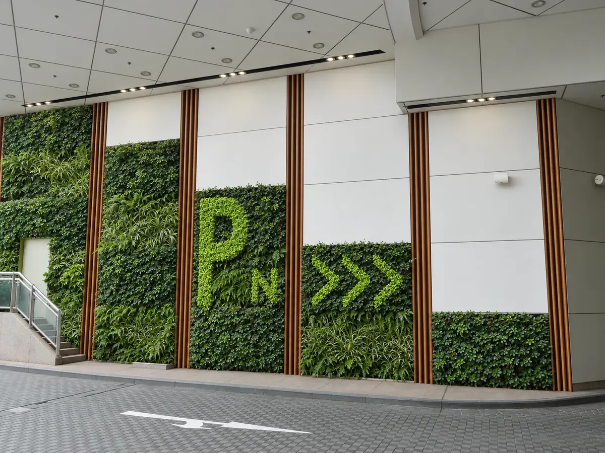 Living green walls drawn into site photos of a mall's car park entrance, main entrance and taxi drop-off, shown before and after. 把綠化牆繪入商場停車場入口、正門及落客區的現場照片，以前後對比呈現。 Card image: AI render based on the original model, 2026. 卡片圖片：根據原有模型生成的 AI 效果圖（2026）。 Open開啟 → |
Landscape · photomontage園景 · 合成效果圖 | Hong Kong香港 | 2013 |
| P17 | Airport shop with bamboo planters, Hong Kong香港機場竹景零售店香港機場竹景零售店Airport shop with bamboo planters, Hong KongRetail interior · concept零售室內 · 概念設計 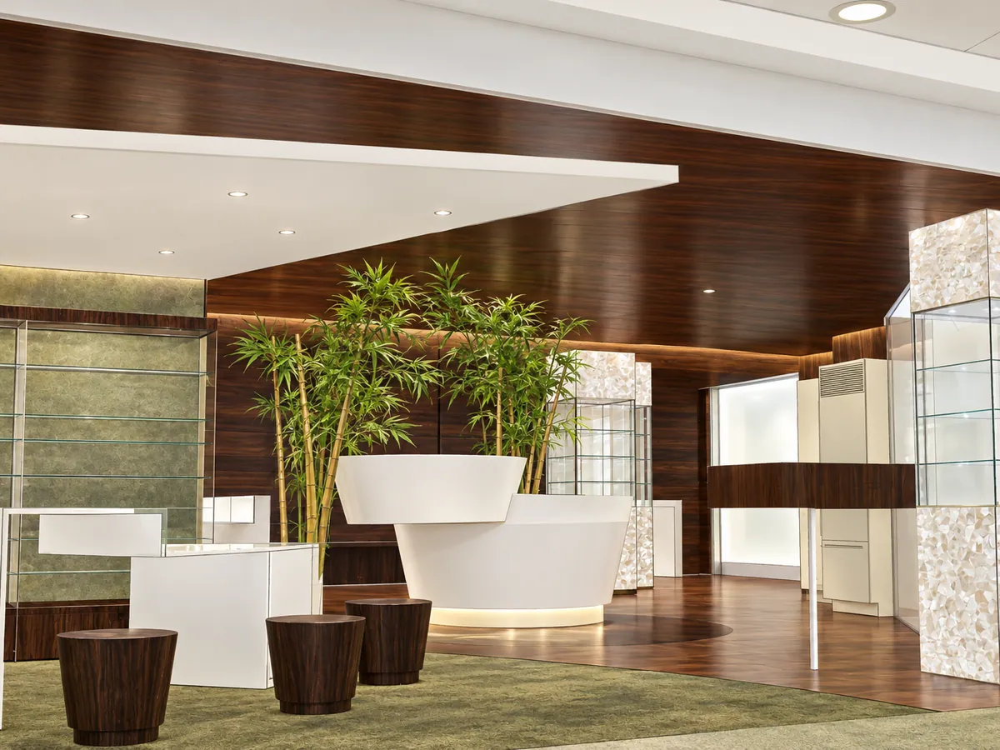 Early work: three concept options for a small airport shop built round a bamboo planter seat, with display furniture sketches. 早期作品：以竹景座椅為中心的機場小店，三個概念方案及展示家具草圖。 Card image: AI render based on the original model, 2026. 卡片圖片：根據原有模型生成的 AI 效果圖（2026）。 Open開啟 → |
Retail interior · concept零售室內 · 概念設計 | Hong Kong香港 | 2006 |
| T01 | HK Landscape Sheets香港園境圖則香港園境圖則HK Landscape SheetsDesign tool · Hong Kong設計工具 · 香港 Draw a podium garden and get a set of A1 landscape sheets: site analysis, planting plan, tree schedule and growth studies. 繪畫一個平台花園，即可得到一套 A1 園境圖則：地盤分析、種植平面、樹種表及生長研究。 Personal hobby project, first version. Not official guidance and not legal or professional advice. 個人興趣作品（第一版），並非官方指引，亦非法律或專業意見。 Open開啟 → |
Design tool · Hong Kong設計工具 · 香港 | Hong Kong香港 | |
| T02 | HK Building Regulations Map香港建築規例關係地圖香港建築規例關係地圖HK Building Regulations MapInteractive map · Hong Kong互動地圖 · 香港 A 3D bilingual map of Hong Kong building control documents and the links between them: ordinance, regulations, practice notes, codes and guidance. 以立體雙語地圖展示香港建築管制文件及其相互關係：條例、規例、作業備考、守則及指引。 Personal hobby project, not a government website. Navigation aid, not legal advice. 個人興趣項目，並非政府網站；僅供導航，並非法律意見。 Open開啟 → |
Interactive map · Hong Kong互動地圖 · 香港 | Hong Kong香港 | |
| T03 | Is it Building Work? Reg 3 Checker是否屬建築工程？Reg 3 檢查器是否屬建築工程？Reg 3 檢查器Is it Building Work? Reg 3 CheckerChecker · United Kingdom檢查工具 · 英國 A step-by-step check against Regulation 3 of the Building Regulations 2010: does the planned work need Building Control, and which Approved Documents apply. 按《2010 年建築規例》第 3 條逐步檢查：計劃中的工程是否需要建築管制審批，以及適用哪些核准文件。 General guidance, not legal advice. The final decision rests with the Building Control Body. 一般指引，並非法律意見。最終決定權在建築管制機構。 Open開啟 → |
Checker · United Kingdom檢查工具 · 英國 | United Kingdom英國 | |
| T04 | CPS CheckerCPS 自我認證檢查器CPS 自我認證檢查器CPS CheckerChecker · United Kingdom檢查工具 · 英國 Can your installer self-certify the work under a Competent Person Scheme, or do you need Building Control? 你的安裝商能否透過「合資格人士計劃」自我認證工程，還是需要申請建築管制？ Indicative only, not legal advice. Scheme scope can change; check the official register. 僅供參考，並非法律意見。計劃範圍可能改變，請查閱官方登記冊。 Open開啟 → |
Checker · United Kingdom檢查工具 · 英國 | United Kingdom英國 | |
| T05 | HK Wind Sketch香港風環境草圖香港風環境草圖HK Wind SketchSimulation sketch · Hong Kong模擬草圖 · 香港 Pick a Hong Kong area and a wind direction, drag in a building, and watch a qualitative 2D wind field react at pedestrian level. Runs in the browser. 選一個香港地區及風向，拖入一座建築，即可看到行人高度的二維風場如何變化。全部在瀏覽器內運行。 A qualitative 2D sketch for teaching and early design feel. Not an Air Ventilation Assessment: no velocity ratio figures, no pass or fail. 供教學及早期設計參考的定性二維草圖。並非空氣流通評估：沒有風速比數字，亦無合格與否之分。 Open開啟 → |
Simulation sketch · Hong Kong模擬草圖 · 香港 | Hong Kong香港 | |
| T06 | Aki AgentAki AgentOpen source · AI agent開源 · AI 代理人 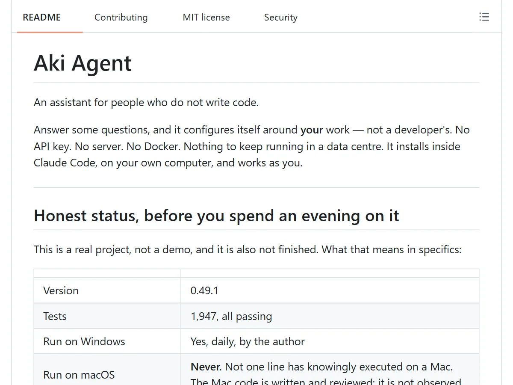 A personal AI assistant for people who do not write code. It interviews you, configures itself around your work, and runs on your own computer. 為不寫程式的人而設的個人 AI 助理。它先訪問你，再按你的工作自行設定，並在你自己的電腦上運行。 Open source and honest about it: a real project, not finished. Tested on Windows; read the status table before installing. 開源項目，並坦白說明現況：真實可用，但仍未完成。已在 Windows 上測試；安裝前請先閱讀狀態表。 Open開啟 → |
Open source · AI agent開源 · AI 代理人 | ||
| C01 | Your own AI agent你的私人 AI 代理人你的私人 AI 代理人Your own AI agentOne to one, online一對一，網上授課 Five one-to-one lessons online. We start from an agent that already works, open it up to see how it runs, then reshape it step by step into an assistant that is yours alone. Very little code. 五堂一對一網上課。由一個已經能運作的代理人開始，拆開來看清它的原理，再一步步改造成只屬於你的助理。所需編程極少。 Open開啟 → |
One to one, online一對一，網上授課 | Online網上 | |
| C02 | Book a lesson預約課堂預約課堂Book a lessonBooking page報名頁面 The booking page shows open times in UK and Hong Kong time, with course details. Returning students can look up their progress there too. 報名頁面以英國及香港時間列出可預約的時段及課程詳情。現有學生亦可在該頁查閱進度。 Open開啟 → |
Booking page報名頁面 | Online網上 | |
| C03 | AI 101AI 101Free handbook免費手冊 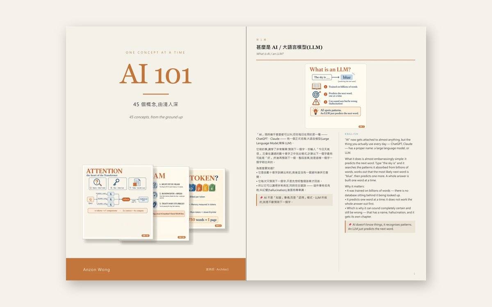 Forty-five ideas behind today's AI, from the basics to the advanced, one per page in Chinese and English. Flip through it online or download the PDF. 當今 AI 背後的 45 個概念，由淺入深，一頁一個，中英對照。可在網上逐頁翻閱，或下載 PDF。 Open開啟 → |
Free handbook免費手冊 | 2026 | |
| A01 | About關於關於AboutPage頁面 I am Anzon Wong, an architect based in the United Kingdom. I am from Hong Kong. 我是 Anzon Wong，現居英國的建築師，來自香港。 Open開啟 → |
Page頁面 | ||
| A02 | Contact聯絡聯絡ContactPage頁面 |
Page頁面 |